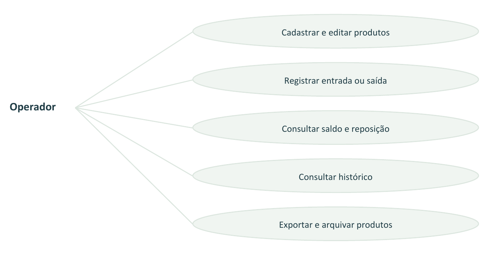
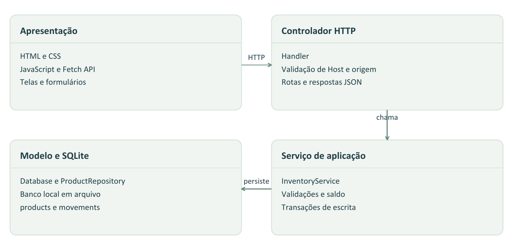
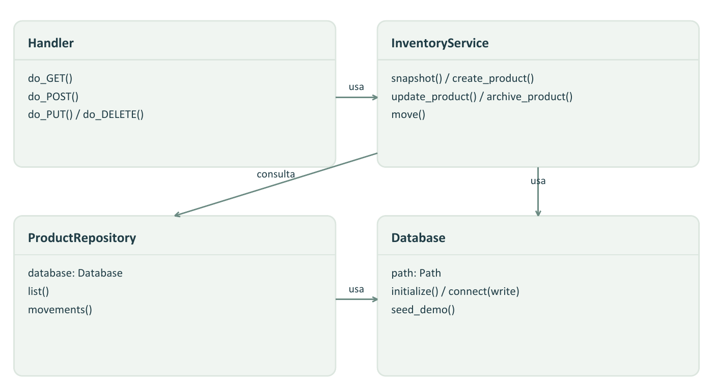
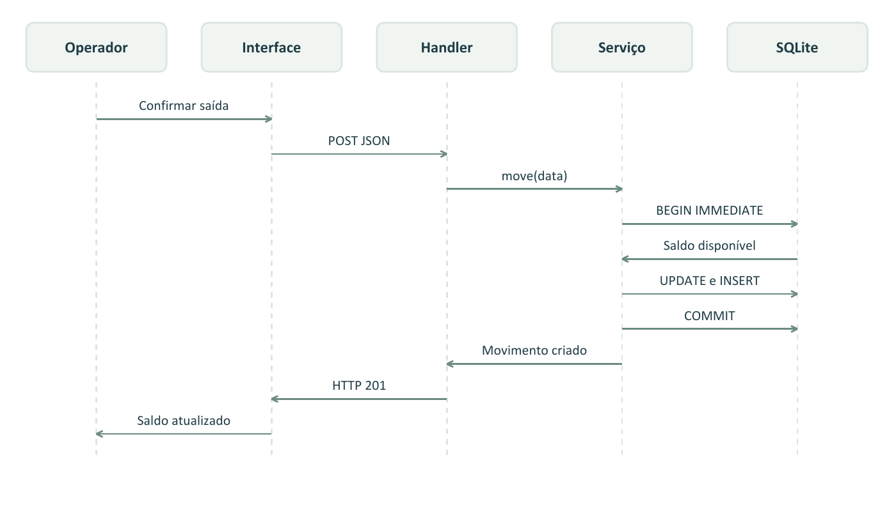
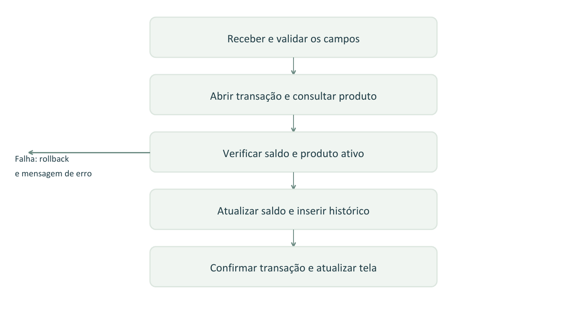
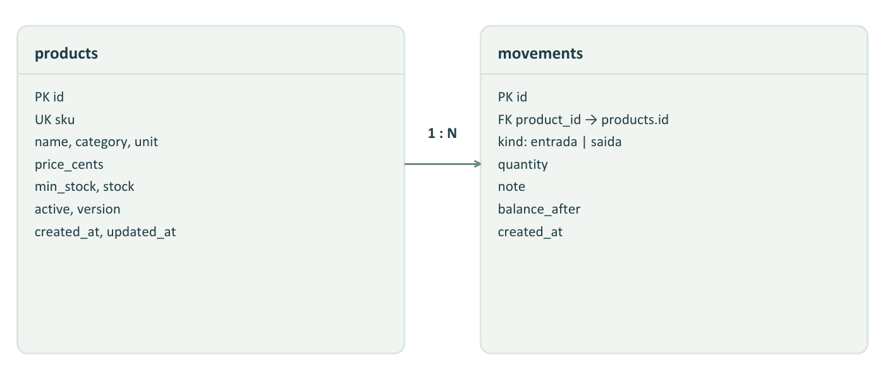
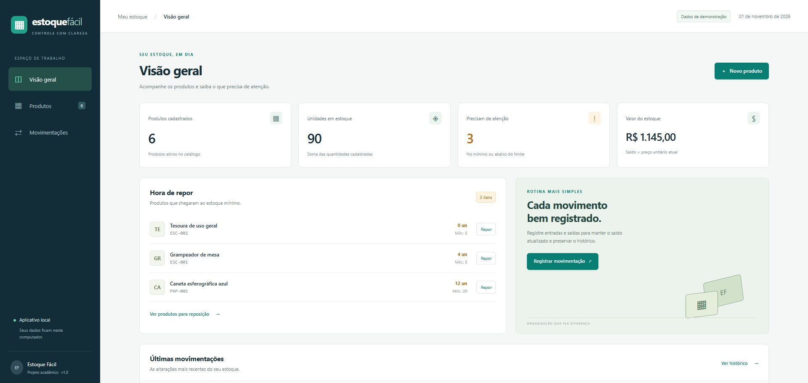
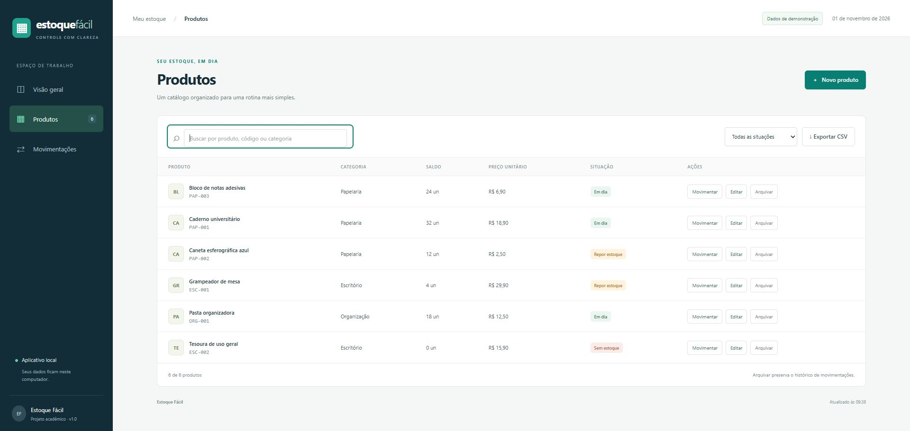
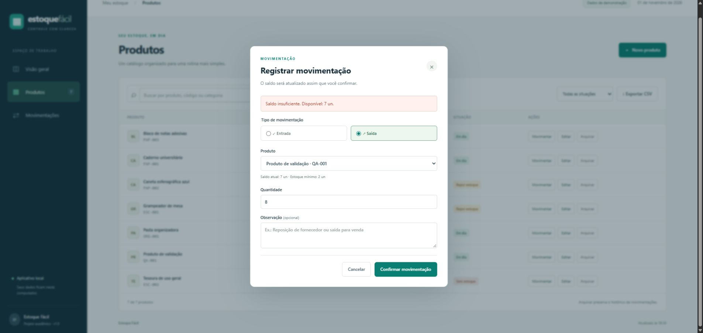
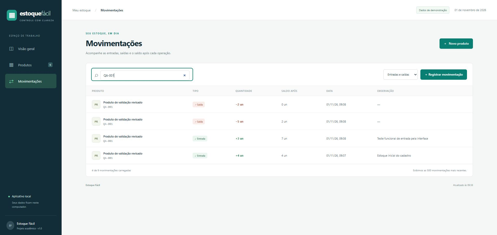

ESTOQUE FÁCIL | DOCUMENTAÇÃO TÉCNICA
Relatório do sistema de controle de estoque
Projeto Integrador Transdisciplinar em Engenharia de Software II
| Identificação | Informação |
|---|---|
| Nome | Rafael Henrique da Silva |
| Curso | Engenharia de Software - Bacharelado |
| Instituição e polo | Ainda não informados |
| RGM | Ainda não informado |
| Data e versão | 01 de novembro de 2026 | sistema 1.0 | texto revisado |
| Tipo de projeto | Sistema local para um exemplo fictício de pequeno comércio |
O Estoque Fácil ajuda a cadastrar produtos e controlar o que entra e sai do estoque. A tela mostra o saldo de cada item, avisa quando é hora de repor e permite consultar o histórico das movimentações.
O sistema funciona no próprio computador. Ele usa Python no processamento dos dados, SQLite para guardar as informações e HTML, CSS e JavaScript nas telas. Não precisa de internet nem de bibliotecas extras para rodar.
Na execução registrada, os 26 testes automatizados passaram, sem falhas ou erros. Os principais fluxos também foram conferidos no navegador. As cinco avaliações de colegas ou profissionais e o vídeo narrado ainda estão pendentes.
Este relatório explica a versão construída e os resultados já verificados. A identificação acadêmica e o template oficial ainda precisam ser completados antes da entrega.
ESTOQUE FÁCIL | DOCUMENTAÇÃO TÉCNICA
A proposta é organizar o estoque de um pequeno comércio. Quando os registros ficam espalhados ou são feitos só em anotações, pode ser difícil saber quanto ainda tem de cada produto e o que precisa ser comprado. O projeto usa esse exemplo para mostrar uma forma simples de controlar os saldos.
O comércio usado como referência é fictício. Não houve entrevista com uma empresa nem pesquisa de campo.
A versão permite cadastrar e editar produtos, registrar entradas e saídas, buscar itens, filtrar o que precisa de reposição e baixar o catálogo em CSV. Também guarda o histórico e permite arquivar produtos que estejam com saldo zero.
O uso previsto é de uma pessoa em um computador. Login, várias empresas, acesso pela rede e integração fiscal ficaram fora do escopo.
| Etapa | O que foi preparado |
|---|---|
| Planejamento | Definição do exemplo, dos requisitos e das regras de estoque |
| Modelagem | Diagramas do sistema e estrutura das tabelas |
| Construção | Telas, API, regras de validação e banco local |
| Conferência técnica | Testes automatizados e uso dos fluxos no navegador |
| Fechamento | Avaliações reais, ajustes, vídeo e arquivo final - ainda pendentes |
Uma saída maior que o saldo precisa ser bloqueada. Uma movimentação válida precisa atualizar o saldo e o histórico juntos. O alerta deve aparecer quando a quantidade chegar ao mínimo ou ficar abaixo dele. Ao fechar e abrir o aplicativo, os dados devem continuar salvos.
A revisão técnica incluiu proteção contra códigos repetidos, edições antigas e duas saídas ao mesmo tempo. Também ajustou a exportação CSV e o acesso inicial à página. Esses ajustes vieram da conferência técnica; o retorno das cinco pessoas ainda falta.
ESTOQUE FÁCIL | DOCUMENTAÇÃO TÉCNICA
Os requisitos abaixo resumem o que o sistema precisa fazer. A última coluna indica onde cada comportamento foi conferido.
| ID | O que o sistema faz | Onde foi conferido |
|---|---|---|
| RF01 | Cadastra produto com código único | test_create_and_initial_audit |
| RF02 | Edita o cadastro sem mudar o saldo | test_update_preserves_balance |
| RF03 | Registra entrada e saída | test_entry_and_exit |
| RF04 | Bloqueia saída sem saldo | test_insufficient_stock_rolls_back |
| RF05 | Mostra resumo e alerta de reposição | test_summary_and_reopen_persistence |
| RF06 | Busca e filtra produtos | Conferência da interface |
| RF07 | Mostra o histórico | test_read_repositories |
| RF08 | Arquiva produto com saldo zero | test_archive_requires_zero_and_preserves_history |
| RF09 | Baixa o catálogo em CSV | test_csv_utf8_and_formula_escape |
O sistema deve guardar os dados no SQLite e rodar sem instalar pacotes extras de Python. As telas precisam se adaptar ao tamanho da janela e ter rótulos para os campos. O servidor confere os dados recebidos e usa consultas com parâmetros, em vez de montar SQL com o texto digitado. O saldo e o histórico precisam continuar de acordo entre si.
Cada código é único e fica em letras maiúsculas. O código continua reservado se o produto for arquivado. As quantidades são inteiras: o saldo pode ir de zero a um milhão, e uma movimentação precisa ter pelo menos uma unidade. Não pode haver saldo negativo.
O preço é guardado em centavos, com até duas casas decimais e sem valores negativos. Só é possível arquivar produtos com saldo zero. O preço atual serve para estimar o valor do estoque; não há cálculo de custo médio. Antes de salvar uma edição, o sistema confere se outra janela já alterou o produto.
ESTOQUE FÁCIL | DOCUMENTAÇÃO TÉCNICA

A divisão do código segue a ideia do MVC. A tela recebe os dados e mostra o resultado. O controlador HTTP identifica o pedido. InventoryService confere as regras. Database e ProductRepository cuidam das conexões e consultas do SQLite.

A tela não faz consultas SQL. Ela conversa com o Python pela API JSON. O servidor fica em 127.0.0.1, um endereço que só permite usar esta versão no próprio computador.
ESTOQUE FÁCIL | DOCUMENTAÇÃO TÉCNICA

Cada classe tem uma função definida. Isso permite testar as regras com um banco temporário, sem precisar abrir a tela do aplicativo.

O exemplo mostra uma saída aceita. O serviço consulta o saldo, atualiza o produto e registra a movimentação. Se faltar saldo, a operação é desfeita e a API responde com o código 409. A tela mantém o formulário aberto e explica o problema.
ESTOQUE FÁCIL | DOCUMENTAÇÃO TÉCNICA

Um produto pode ter várias movimentações, e cada movimentação pertence a um produto. O campo product_id faz essa ligação. O código do produto também é único. Quando um produto é arquivado, ele sai do catálogo ativo, mas as movimentações continuam salvas.

O saldo fica salvo em products para agilizar a consulta. O campo balance_after guarda quanto sobrou depois de cada lançamento. Os dois são atualizados na mesma transação: ou a operação inteira é salva, ou nada muda. A tabela settings só controla se os produtos de demonstração já foram carregados.
ESTOQUE FÁCIL | DOCUMENTAÇÃO TÉCNICA
Esta tabela mostra os campos usados no banco. Os nomes estão iguais aos do código para facilitar a consulta.
| Tabela e campo | Tipo | Para que serve |
|---|---|---|
| products.id / sku | INTEGER / TEXT | Identifica o produto e guarda seu código único |
| products.name / category / unit | TEXT | Nome, categoria e unidade un, cx ou pct |
| products.price_cents | INTEGER | Preço unitário em centavos |
| products.min_stock / stock | INTEGER | Mínimo para reposição e saldo atual |
| products.active / version | INTEGER | Indica se está ativo e controla a versão da edição |
| products.created_at / updated_at | TEXT | Datas de criação e atualização, em UTC |
| movements.id / product_id | INTEGER | Identifica o lançamento e liga ao produto |
| movements.kind / quantity | TEXT / INTEGER | Tipo de movimento e quantidade positiva |
| movements.note | TEXT | Observação com até 250 caracteres |
| movements.balance_after | INTEGER | Saldo depois do lançamento |
| movements.created_at | TEXT | Data da movimentação, em UTC |
| settings.key / value | TEXT | Controle do carregamento da demonstração |
| Método e endereço | O que acontece |
|---|---|
| GET /api/state | Carrega produtos, resumo e últimas 500 movimentações |
| POST /api/products | Cadastra o produto e registra o saldo inicial |
| PUT /api/products/{id} | Edita o cadastro e confere a versão recebida |
| DELETE /api/products/{id} | Arquiva o produto, desde que o saldo seja zero |
| POST /api/movements | Confere os dados e registra entrada ou saída |
| GET /api/export | Gera o CSV com os produtos ativos |
As respostas mais comuns são 200 para uma consulta ou edição, 201 para um cadastro e 400 para dados inválidos. O código 409 indica um conflito, como saldo insuficiente. Também há respostas para origem bloqueada (403), item não encontrado (404), envio grande demais (413), formato incorreto (415) e banco indisponível (503).
ESTOQUE FÁCIL | DOCUMENTAÇÃO TÉCNICA
Extraia o ZIP completo e abra INICIAR_DEMONSTRACAO.bat. É preciso ter Python 3.10 ou mais recente instalado. O navegador abre em http://127.0.0.1:8765 com seis produtos fictícios. Deixe o terminal aberto durante o uso e pressione Ctrl+C nele para encerrar.
Para começar sem produtos, use INICIAR_ESTOQUE_VAZIO.bat. Esse modo guarda os dados em outro banco, separado da demonstração.
Clique em Novo produto e preencha os campos. O código aceita letras, números, hífen e sublinhado. Ao salvar, a quantidade inicial entra no histórico. O botão Editar muda o cadastro; para alterar a quantidade, use Movimentar.
Escolha o tipo, o produto e a quantidade. Use a observação para explicar o motivo e confirme. Se tentar tirar mais do que existe, o sistema mostra o erro e mantém o saldo. Se a conexão falhar e houver dúvida sobre o registro, confira o histórico antes de repetir.
O painel mostra os totais e os itens que precisam de reposição. Na lista de produtos, busque por nome, código ou categoria, com ou sem acentos. Os filtros ajudam a ver a situação do estoque e o tipo de movimentação. O botão Exportar CSV baixa o catálogo ativo.
A soma das quantidades não converte caixas ou pacotes em unidades. O valor do estoque é calculado com o saldo e o preço atual; ele não representa lucro ou valor fiscal.
Só é possível arquivar com saldo zero. O histórico fica salvo e o código não pode ser reutilizado. Para corrigir uma movimentação errada, registre outra no sentido contrário e explique o motivo.
Os arquivos ficam em data/demo.sqlite e data/estoque.sqlite. Para backup, feche o aplicativo e copie toda a pasta data. Esta versão é local e não deve ser exposta à rede ou à internet.
ESTOQUE FÁCIL | DOCUMENTAÇÃO TÉCNICA
Os testes foram executados em 01/11/2026 às 09h41, com Python 3.12.10. Os 26 passaram, sem falhas ou erros. O registro completo está em EVIDENCIAS_TESTES.txt. Os testes usam bancos temporários, separados dos dados de uso.
| Parte | O que foi testado |
|---|---|
| Cadastro e edição | Saldo inicial, código repetido, preço e quantidade inválidos, edição sem alterar saldo e bloqueio de edição antiga |
| Entradas e saídas | Movimentação válida, saída de todo o saldo, saldo insuficiente, limite máximo e produto inexistente |
| Banco e transações | Desfazer operação quando o histórico falha, preservar dados e impedir duas saídas acima do saldo |
| Consultas | Resumo, histórico, arquivamento e carregamento único dos dados de exemplo |
| API e CSV | Fluxo completo por HTTP, formato dos dados, tamanho do envio, origem, arquivos e exportação |
A conferência técnica no Chrome usou o produto QA-001, com saldo inicial de quatro. Uma entrada de três levou o saldo a sete. A tentativa de saída de oito foi bloqueada. Uma saída de cinco deixou o saldo em dois e ativou o alerta de reposição.
O nome foi editado e o produto foi encontrado pela busca sem acentos. O arquivamento com saldo dois foi bloqueado. Depois da saída das duas unidades restantes, o produto foi arquivado e os quatro lançamentos continuaram no histórico.
A tela foi conferida no tamanho padrão do navegador e com 390 pixels de largura. Essa conferência técnica foi feita pelo assistente. Ela não substitui as cinco avaliações reais e não cobre todos os navegadores ou necessidades de acessibilidade.
A proteção contra acesso externo também bloqueava a abertura inicial da página a partir de outro site. O ajuste liberou só essa navegação para a página inicial e manteve a API bloqueada para chamadas externas. Um teste passou a conferir essa diferença.
ESTOQUE FÁCIL | DOCUMENTAÇÃO TÉCNICA


As imagens mostram dados fictícios e o uso técnico do sistema. Não houve implantação em um comércio real.
ESTOQUE FÁCIL | DOCUMENTAÇÃO TÉCNICA


A sequência foi: entrada inicial de quatro, entrada de três, saída de cinco e saída de dois. O saldo final ficou em zero. As tentativas bloqueadas não geraram lançamentos. O histórico mostra o nome atual do produto.
ESTOQUE FÁCIL | DOCUMENTAÇÃO TÉCNICA
A avaliação com cinco colegas ou profissionais ainda não aconteceu. O formulário VALIDACAO_USUARIOS.html está preparado para cada pessoa registrar o que funcionou, as dificuldades e as sugestões. As respostas podem ser salvas em JSON ou impressas em PDF.
Depois dessas avaliações, é preciso analisar as sugestões, registrar as decisões e conferir as correções. Também faltam o vídeo narrado, a identificação acadêmica, a publicação do repositório e o preenchimento do template oficial.
Esta base começou do zero porque o trabalho anterior não estava disponível. Como o enunciado pede continuar o PIT I, essa substituição ainda precisa ser confirmada com a tutoria. O prazo consultado para entrega é 17/11/2026 às 23h59, horário de Brasília.
Há uma diferença nas instruções do vídeo: uma parte pede até cinco minutos e outra pede pelo menos cinco. O roteiro foi pensado para cerca de cinco minutos, mas a duração precisa ser confirmada.
O sistema não tem login, sincronização entre computadores, importação de dados ou integração fiscal. A tela carrega até 500 movimentações por vez. Entre as melhorias possíveis estão a paginação do histórico, a restauração de produtos arquivados e o registro do operador responsável. Essas funções ainda não foram implementadas.
Houve apoio de um assistente de programação por IA na implementação, nos textos e na conferência técnica. O material ainda precisa ser revisado e compreendido para a apresentação, seguindo as regras da instituição. O checklist detalhado fica em ENTREGA.md.
ESTOQUE FÁCIL | DOCUMENTAÇÃO TÉCNICA
As referências abaixo são a documentação das tecnologias usadas. Foram consultadas em 01/11/2026.
Python Software Foundation. sqlite3 - DB-API 2.0 interface for SQLite databases. https://docs.python.org/3/library/sqlite3.html
Python Software Foundation. http.server - HTTP servers. https://docs.python.org/3/library/http.server.html. O módulo não é recomendado para produção; por isso, o projeto foi limitado ao uso local.
Python Software Foundation. unittest - Unit testing framework. https://docs.python.org/3/library/unittest.html
MDN Web Docs. The dialog element. https://developer.mozilla.org/en-US/docs/Web/HTML/Reference/Elements/dialog
Cruzeiro do Sul Virtual. Projeto Integrador Transdisciplinar em Engenharia de Software II. Situações-Problema 1, 2 e 3; Problema em Foco; Atividade de Entrega. Material consultado no ambiente do curso.
| Arquivo ou pasta | Conteúdo |
|---|---|
| README.md e arquivos BAT | Instruções e atalhos para abrir e testar |
| estoque/ e static/ | Código Python, telas, estilos e JavaScript |
| tests/ | Testes com bancos temporários |
| docs/schema.sql e diagramas.mmd | Tabelas do banco e diagramas editáveis |
| docs/imagens/ | Capturas e diagramas do relatório |
| docs/VALIDACAO_USUARIOS.html | Formulário para cada avaliador |
| docs/ENTREGA.md e ROTEIRO_VIDEO.md | Checklist da entrega e fala sugerida para o vídeo |